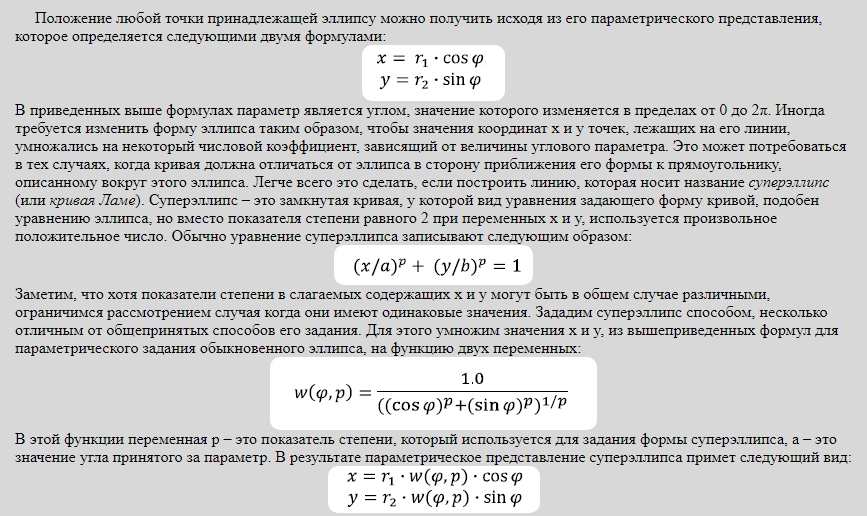

Продолжим рассмотрение функций библиотеки WebGeometry применительно к построению
геометрических фигур на плоскости. В данном разделе кривые линии на плоскости будут отрисовываться
путем соединения предварительно рассчитанных координат точек принадлежащих этим линиям
отрезками прямых.
Предположим, что функциональная зависимость y от x не задана непосредственно y = f(x),
а через промежуточную величину t, называемую параметром.
Тогда уже две формулы задают параметрическое представление функции.
При построении кривых на плоскости в качестве параметра t мы будем обычно брать угол φ.
Этот угол обычно определяется как угол наклона к оси абсцисс прямой проведенный из начала координат
(или из некоторой точки характерной для данной кривой) до точки лежащей непосредственно на кривой.
В качестве линий определяющих форму рундиста огранок часто используется эллипс (или окружность), а также замкнутая кривая имеющая название суперэллипс
Для расчета координат точек лежащих на суперэллипсе достаточно рассчитать его вид только для первого квадранта, а для остальных квадрантов суперэллипса можно найти координаты принадлежащих ему точек исходя из соображений симметрии.
Для расчета точек на суперэллипсе используется функция init_superellipse.
Параметр square_deviation задает величину отклонения суперэллипса от эллипса.
Степень суперэллипса равна
2 / ( 1 - square_deviation ).
Параметр lw задает удлинение эллипса вдоль оси X.
При значениях square_deviation = 0.0 и lw = 1.0 суперэллипс становится окружностью.
function init_superellipse(O, R, lw, square_deviation)
{
var fi_0 = -90*DEGREE;
var r1 = R * lw; // Полуось эллипса по оси X
var r2 = -R; // Полуось эллипса по оси Y
if ( square_deviation < -1 || square_deviation >= 0.995 )
return null;
var p = 2 / ( 1 - square_deviation ); // Степень суперэллипса
var del_fi = 2 * M_PI / 64; // Шаг углового параметра
var x, y, w, fi;
var i;
for (i = 0; i < 64; i++)
{
fi = fi_0 + i*del_fi; // Значение углового параметра
x = Math.cos(fi);
y = Math.sin(fi);
w = Math.pow (Math.abs (x), p) + Math.pow (Math.abs (y), p);
w = 1 / Math.pow ( w, 1/p );
var point = new Point2D ( O[0] + r1 * w * x, O[1] + r2 * w * y);
points[i] = point;
}
}
Отрисовку на холсте осуществляет функция draw_superellipse,
текст которой находится в файле superellipse.js.
Кривая с названием фолиум (simple folium) имеет форму листа. В справочниках по плоским кривым можно
найти ее параметрическое представление и по приведенным в них формулам построить эту кривую (рисунок 2).
Однако мы построим ее не по формулам, а чисто геометрическим способом. Для этого проведем окружность cir
имеющую диаметр OA. Из точки O проведем прямую до пересечения в точке P с этой окружностью.
Найдем проекцию точки P на прямую OA. Эта проекция будет находиться в точке Q.
Из точки Q опустим перпендикуляр на прямую OP.
Точка М пересечения этого перпендикуляра с прямой OP будет принадлежать искомой прямой.
// Кривую будем проводить через 32 точки.
var points_folium = [32];
..........................
..........................
var i;
// Рассчитаем 16 точек лежащих на верхней части искомой кривой.
var n = 16;
var fi = 0;
var d_fi = 90*DEGREE / n;
var cir_center = new Point2D(O[0] + a, O[1]);
var cir = new Circle2D(cir_center, a);
var pt = new Point2D(O[0] + 1, O[1]);
for (i = 1; i < n; i++)
{
fi = fi + d_fi;
pt[1] = O[1] + Math.tan(fi);
// Создаем прямую составляющую угол fi с осью OX
// (она проходит через точки O и pt - на рисунке это прямая OP)
var line = new Line2D(O, pt);
var point1 = new Point2D();
var point2 = new Point2D();
var P = new Point2D();
// Определяем точку P
if(!cir.IntersectionLineCircle (line, point1, point2))
{
return null;
}
// Выбор точки P из двух точек пересечения прямой с окружностью
if (point1[1] > point2[1])
{
P[0] = point1[0];
P[1] = point1[1];
}
else
{
P[0] = point2[0];
P[1] = point2[1];
}
// Определяем координаты точки Q
var Q = new Point2D(P[0], O[1]);
// Создаем прямую QM перпендикулярную прямой line
// и проходящую через точку Q.
var QM = line.CreateNormalLinePoint(Q);
// Находим точку M лежащую на кривой simple folium
var M = line.IntersectionTwoLines(QM);
points_folium[i] = M;
}
points_folium[0] = new Point2D(O[0] + 2*a, O[1]);
points_folium[16] = new Point2D(O[0], O[1]);
// Все остальные точки лежащие на кривой simple folium
// находим из соображений симметрии.
for (i = 1; i < 16; i++)
{
points_folium[16+i] = new Point2D(points_folium[16-i][0],
- points_folium[16-i][1] + 2 * O[1] );
}
Полный текст программы осуществляющий расчет и построение на холсте кривой фолиум находится в файле folium.js.
Построение производится следующим образом. Пусть задана точка A находящаяся на расстоянии a от оси ординат. Вокруг точки A вращается луч на котором откладывается отрезок BM равный отрезку OB. Геометрическое место точек M и будет являться искомой кривой.
// Кривую будем проводить через 32 точки.
var points_strophoid = [32];
........................................
........................................
var i;
// Рассчитаем 16 точек лежащих на верхней части искомой кривой.
var n = 16;
var fi = 0;
var d_fi = 90*DEGREE / n;
// Создаем вертикальную прямую проходящую через точку O.
// При запуске программы эта прямая совпадает с осью ординат.
var OY = new Line2D(O, new Point2D(O[0], O[1] + 1));
var A = new Point2D(O[0] - a, O[1]);
var pt = new Point2D(A[0] + 1, A[1]);
var B; // Объявление переменной для точки на вертикальной
// прямой проходящей через точку O. Мы будем вычислять
// координаты этой точки внутри цикла.
for (i = 1; i < n; i++)
{
fi = fi + d_fi;
pt[1] = A[1] + Math.tan(fi);
// Создаем прямую составляющую угол fi с осью OX
// (она проходит через точки A и pt - на рисунке это прямая AB)
var line = new Line2D(A, pt);
B = line.IntersectionTwoLines(OY);
var dist_OB = B.Distance(O);
var dist_AB = B.Distance(A);
var dist_AM = dist_AB - dist_OB;
var dist_MB = dist_OB;
var relation = dist_AM / dist_MB;
var M = new Point2D();
// точка M делит отрезок AB в отношении равным величине relation
// ( вспоминаем аналитическую геометрию )
M[0] = (A[0] + relation * B[0]) / (1 + relation);
M[1] = (A[1] + relation * B[1]) / (1 + relation);
points_strophoid[i] = M;
}
points_strophoid[0] = O;
points_strophoid[16] = A;
// Все остальные точки лежащие на кривой strophoid
// находим из соображений симметрии.
for (i = 1; i < 16; i++)
{
points_strophoid[16+i] = new Point2D(points_strophoid[16-i][0],
- points_strophoid[16-i][1] + 2 * O[1] );
}
Полный текст программы осуществляющий расчет и построение строфоиды находится в файле strophoid.js.
Улитка паскаля - это плоская линия, которая описывается фиксированной точкой одной окружности,
катящейся по неподвижной другой окружности. Если радиусы обеих окружностей равны,
то такая кривая называется кардиоидой. Обозначим через R1 расстояние от центра O до центра
подвижной окружности, а через R2 - радиус подвижной окружности (смотри работу программы).
Кардиода получается из улитки Паскаля когда R1 = 2 × R2.
Построение улитки Паскаля иллюстрирует следующий код:
// Кривую будем проводить через 32 точки.
var points_cardioid = [32];
...........................
...........................
var n = 32;
var fi = 0;
var d_fi = 180*DEGREE / n;
var O = new Point2D (0, 0.0);
for (i = 0; i < n; i++)
{
fi = fi + d_fi;
var x1 = R1 * Math.cos(fi); // одинарное значение угла φ
var y1 = R1 * Math.sin(fi); // одинарное значение угла φ
// Точка на одной окружности
var pt1 = new Point2D(x1, y1);
var x2 = - R2 * Math.cos(2*fi); // удвоенное значение угла φ
var y2 = - R2 * Math.sin(2*fi); // удвоенное значение угла φ
// Точка на другой окружности
var pt2 = new Point2D(x2, y2);
// Складываем координаты точек на двух окружностях
var pt = pt1.Add(pt2);
points_cardioid[i] = pt;
fi = fi + d_fi;
}
Полный текст программы осуществляющий расчет и построение улитки Паскаля находится в файле cardioid.js.
Waviness - это плоская линия, образованная комбинацией двух тригонометрических функций:
var N = 96;
var i;
var del = 2 * M_PI / N;
var fi = 0;
for(i = 0; i < N; i++)
{
fi = 90*DEGREE - i*del;
var x = R * (1 / ( 1 + e * Math.cos(m * fi))) * Math.cos(fi) + O[0];
var y = R * (1 / ( 1 + e * Math.cos(m * fi))) * Math.sin(fi) + O[1];
var point = new Point2D ( lw * x, y);
points_w[i] = point;
}
Форма эллипса (или окружности) изменяется путем умножения координат каждой его точки на
величину равную
1 / ( 1 + e * Math.cos(m * fi))
Значение m задает количество холмов и впадин на эллипсе,
а величина e определяет их глубину/высоту. Желательно задавать величине e
значение равное целому положительному числу. В этом случае количество холмов и впадин также
будет равно целому (а не дробному) числу.
В дальнейшем 2D-функции входящие в библиотеку WebGeometry нам понадобятся для построения рундистов огранок, а также программ-чертежей иллюстрирующих соответствующие построения.
В следующей главе мы перейдем к созданию 3D-моделей сложных многогранников и будем для этого использовать 3D-функции входящие в библиотеку WebGeometry.